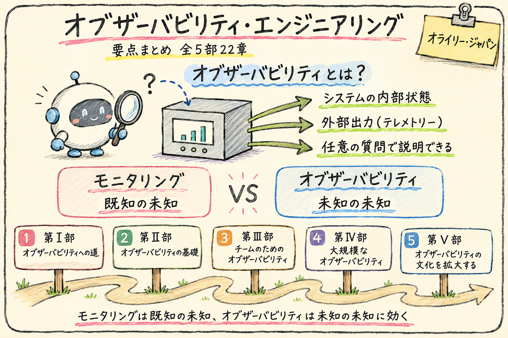

オブザーバビリティ・エンジニアリング
原題：Observability Engineering: Achieving Production Excellence
- 著者
- Charity Majors, Liz Fong-Jones, George Miranda
- 訳者
- 大谷 和紀, 山口 能迪
- 出版社
- オライリー・ジャパン
- 発行年
- 2023年
本書の全体像
本書は、オブザーバビリティを「システムの内部状態を、その外部出力（テレメトリー）から、コードを変更せず任意の質問で説明できる能力」と定義する。従来のモニタリングは、あらかじめ想定した障害（既知の未知）の検知に向くが、分散システムで生じる予期しない問題（未知の未知）の調査には向かない。本書はその限界を出発点に、オブザーバビリティの基礎となるデータ構造（任意の幅を持つ構造化イベント、トレース、OpenTelemetry による計装）、チームへの導入と SLO の活用、大規模運用でのデータストア・サンプリング・パイプライン、そして組織文化への展開までを、第Ⅰ部から第Ⅴ部にかけて段階的に論じる。
この本がターゲットとする読者
本番環境の分散システムを開発・運用し、モニタリングの限界に直面しているエンジニアと、その導入を組織で検討する立場の読者を想定している。（本書の内容から推定）
ソフトウェアエンジニア
本番の挙動を前提にコードを書き、計装とデバッグを自分の責務として扱う方法を得る。
SRE・運用エンジニア
モニタリング中心の運用から、未知の問題を調査できる手段への移行と SLO 運用の指針を得る。
プラットフォームエンジニア
大規模なテレメトリーをデータストア・サンプリング・パイプラインで扱う設計判断の材料を得る。
テックリード・管理職
導入のビジネス事例、関係者の巻き込み、成熟度モデルによる現在地の把握を得る。
おすすめの読み進め方
本書は第Ⅰ部で概念、第Ⅱ部で技術的基礎、第Ⅲ部以降で組織への展開へと積み上がる構成のため、原則として部の順に読むと理解しやすい。立場ごとに重点を変える読み方を以下に示す。
オブザーバビリティへの道
オブザーバビリティの定義と、モニタリングとの違いを示す。なぜ今これが必要かを論じる。
オブザーバビリティの基礎
構造化イベント、トレース、OpenTelemetry による計装、イベント解析という技術的構成要素を扱う。
チームのためのオブザーバビリティ
チームへの導入、オブザーバビリティ駆動開発、SLO とアラート、サプライチェーンへの適用を扱う。
大規模なオブザーバビリティ
作るか買うかの判断、データストア、サンプリング、テレメトリーパイプラインという規模の課題を扱う。
オブザーバビリティの文化を拡大する
ビジネス事例、関係者との協力、成熟度モデル、そして次の一歩という組織文化への展開を扱う。